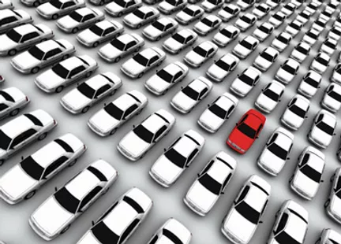
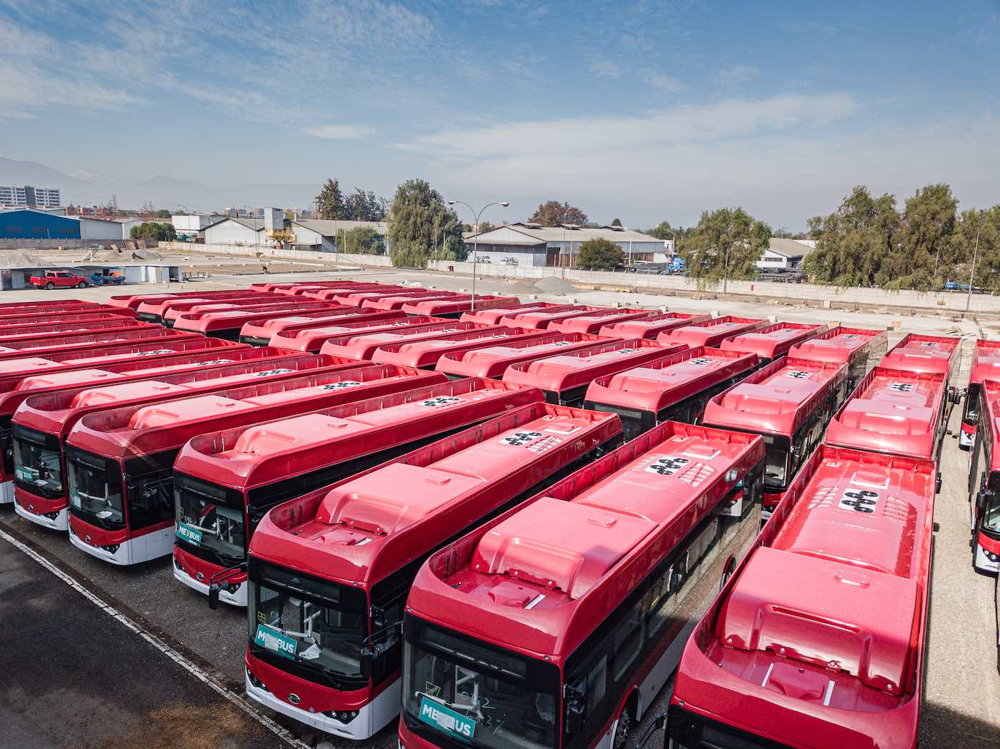
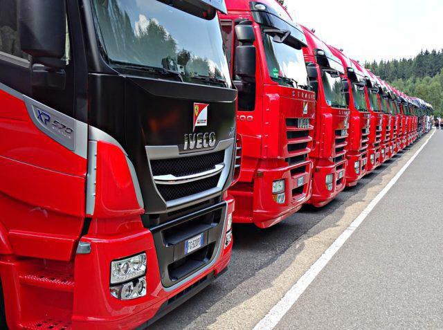
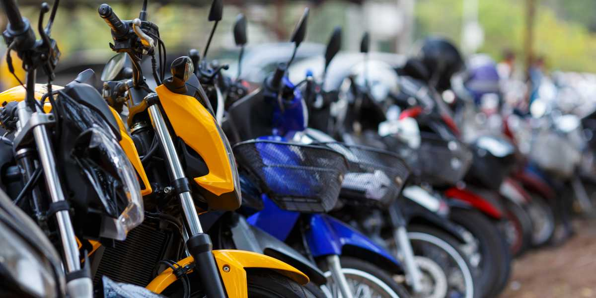

Carros

Os carros entraram em uso global durante o século XX e as economias desenvolvidas dependem deles. O ano de 1886 é considerado como o ano de nascimento do carro moderno, quando o inventor alemão Karl Benz patenteou seu Benz Patent-Motorwagen...
(Saiba Mais)
Ônibus

Ônibus é um veículo motorizado terrestre designado para o transporte de pessoas. Ônibus podem ter a capacidade de carregar até 300 passageiros.[2] O tipo mais comum de ônibus é o ônibus simples ou convencional, usado em grande parte dos centros urbanos para o transporte público de passageiros...
(Saiba Mais)
Camiões

Caminhões é um veículo motorizado terrestre para transporte de bens. Ao contrário dos automóveis, onde é comum serem construídos em uma estrutura única (à excepção das minivans), sendo a maioria deles feitos sobre uma estrutura forte chamada de chassis, os caminhões são construídos em várias dimensões, desde o tamanho de um automóvel pick-up com mala aberta ao tamanho de camiões pesados de autoestrada com semiatrelados....
(Saiba Mais)
Motos

Motociclo ou motocicleta (também conhecida simplesmente por motoca, moto ou ainda mota), é um veículo motorizado de duas rodas e tracção traseira e salvo raras excepções, capaz de desenvolver velocidade de cruzeiro com segurança e conforto. É um meio de transporte bastante utilizado devido ao mais baixo consumo de combustível e por ter um preço mais acessível que a maioria dos automóveis. Entretanto, há motos que consomem mais combustível do que muitos automóveis, variando, entre outros fatores, com a cilindrada do motor.
(Saiba Mais)